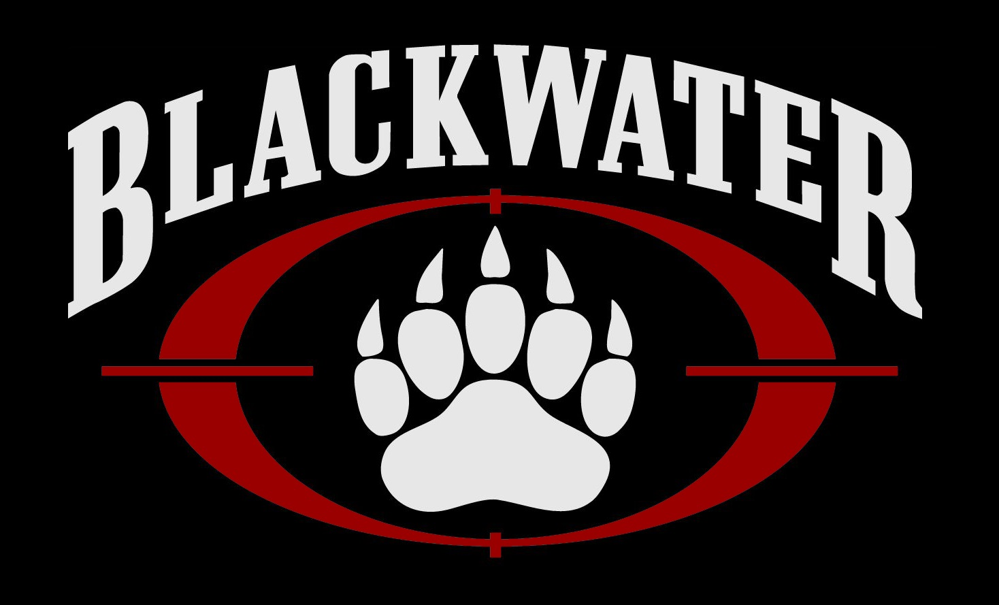

Blackwater PMC
Blackwater, now known as Academi, is a private military contractor founded by Erik Prince in 1997. Based in the United States, Blackwater gained notoriety for its involvement in various security and military operations, particularly during the Iraq War. The company provided armed security services, training, and logistical support to government and private clients. Its activities were marked by controversy, including the 2007 Nisour Square massacre in Baghdad, where Blackwater personnel were involved in a deadly shooting incident that resulted in civilian casualties. Subsequently, the company underwent rebranding and organizational changes, becoming Academi in 2011. While its reputation remains tarnished by past incidents, Academi continues to operate as a private security and training provider for government and corporate clients, emphasizing a commitment to professionalism and compliance with international regulations.
Paul Bremer, an American diplomat, escorted by our operatives.